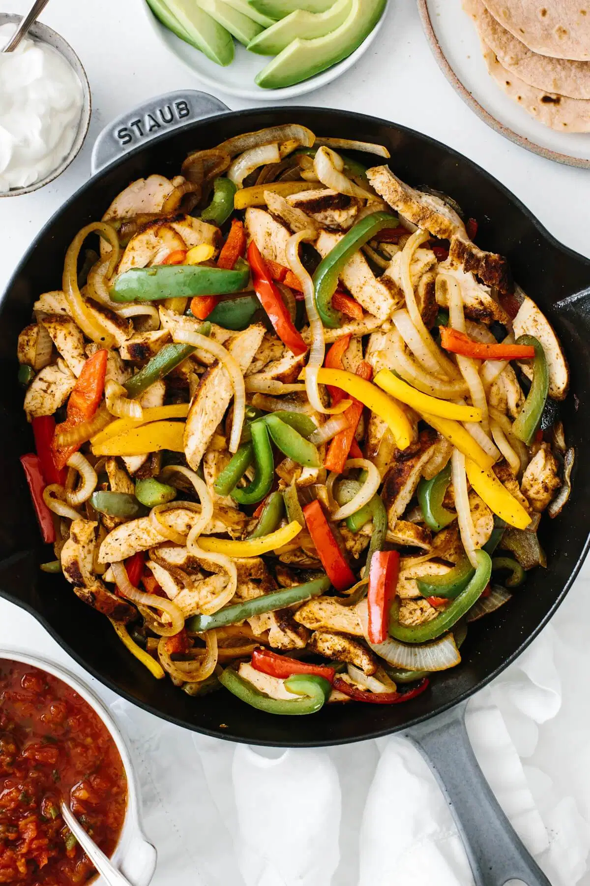
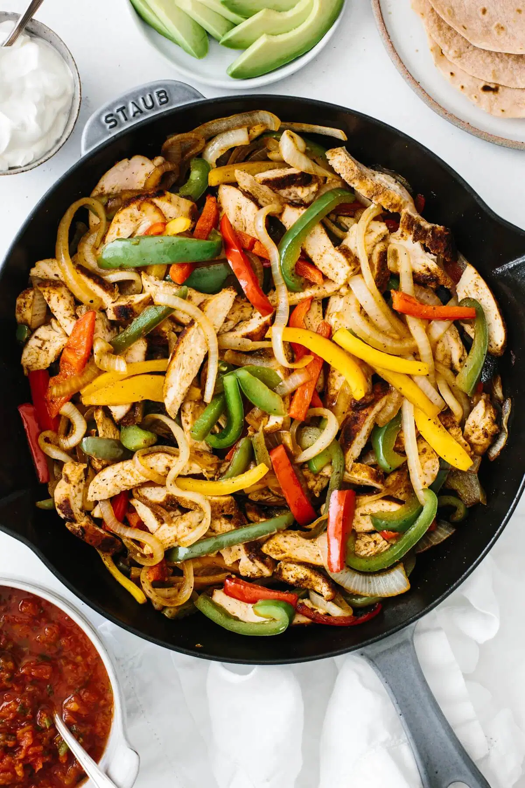

JUMP TO RECIPE

JUMP TO RECIPE

Chicken fajitas are an easy and flavorful weeknight meal. A classic Mexican recipe, juicy chicken is seasoned, seared and cooked to perfection, then tossed with sauteed bell peppers and onions. A squeeze of fresh lime adds a punch of flavor and the chicken fajitas are served with warm tortillas and toppings. You can’t beat this healthy family favorite recipe.
While you can buy pre-made seasoning packets, I’d caution against it. Nothing compares to the flavor of homemade fajita seasoning and it’s easy to whip up. Plus, you’ll avoid any unnecessary fillers and additives. Here’s a quick rundown of the spices you’ll need:
- Chili Powder
- Ground Cumin
- Garlic Powder
- Paprika
- Oregano
- Pepper
- Salt
CHICKEN FAJITAS
- 3 boneless skinless chicken breasts
- 1 onion, thinly sliced
- 3 bell peppers, thinly sliced
- 2 tablespoons olive oil
- 1/2 lime
FAJITA SEASONING
- 1/2 tablespoon chili powder
- 1/2 tablespoon ground cumin
- 1 teaspoon garlic powder
- 1/2 teaspoon paprika
- 1/2 teaspoon oregano
- 1/2 teaspoon salt
- 1/4 teaspoon pepper
FOR SERVING
- tortillas
- sour cream
- pico de gallo
- avocado
- Add the fajitas seasoning ingredients to a small mixing bowl and stir together.
- Drizzle the olive oil and balsamic reduction on top of the tomatoes and mozzarella.
- Heat the oil in a large skillet over medium heat. Sear the chicken breasts for about 7-8 minutes on each side.
- While your chicken is cooking, cut the bell peppers and onion into thin slices.
- Once the chicken has finished cooking, remove it to a plate and let it rest for a couple of minutes. Add the bell peppers and onion to the same skillet over medium heat and saute for 4-5 minutes, stirring frequently.
- When the bell peppers are just about done sauteing, slice the chicken breasts into strips.
- Add the chicken back into the skillet, add a squeeze of fresh lime juice and stir everything together.
- Serve immediately with tortillas and extra toppings such as sour cream, pico de gallo and guacamole.
BACK TO THE TOP